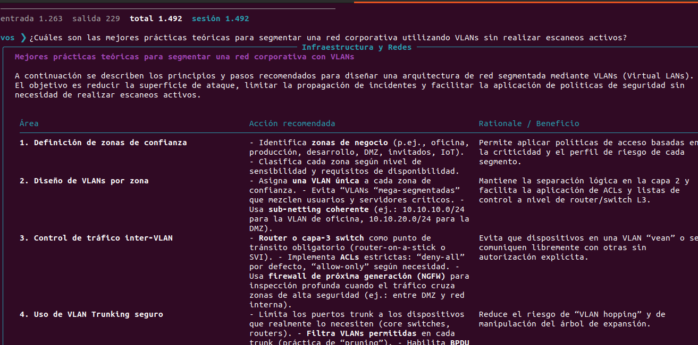
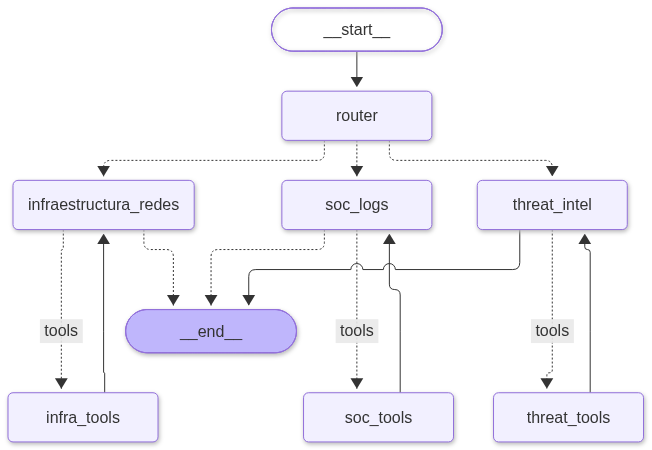
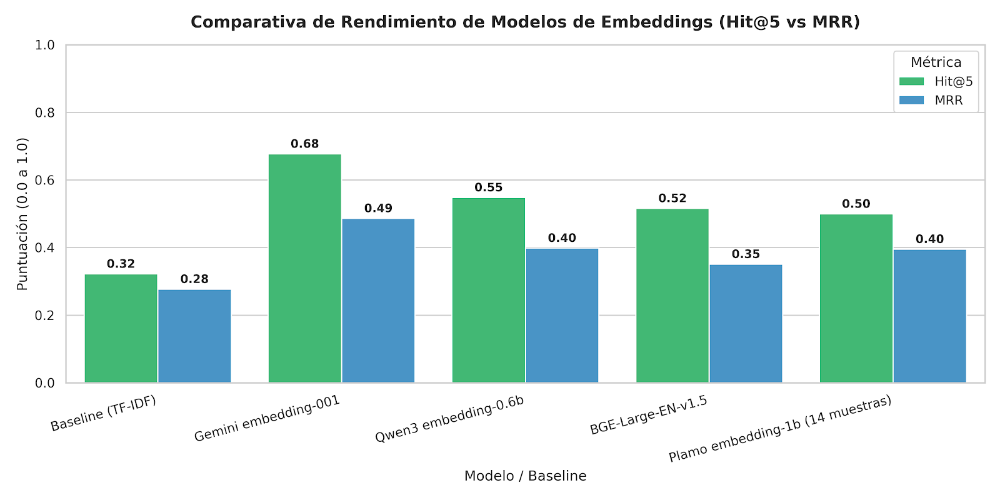

Capazeta
Asistente multi-agente de ciberseguridad que enruta cada consulta a un especialista en redes, SOC o threat intelligence, con recuperación semántica sobre MITRE ATT&CK.
Asistente multi-agente de ciberseguridad que enruta cada consulta a un especialista en redes, SOC o threat intelligence, con recuperación semántica sobre MITRE ATT&CK.
Capazeta se ejecuta desde la terminal con uv run capazeta. El router
clasifica el pedido y lo deriva al subagente de dominio, que decide qué herramientas
invocar antes de responder.

Enrutamiento automático y respuesta del subagente en la CLI (Rich).

Grafo LangGraph: router central, subagentes por dominio y nodos de herramientas.
Los equipos de seguridad dedican buena parte de su tiempo a tareas repetitivas: interpretar alertas de un SIEM, mapearlas a técnicas de ataque conocidas y decidir qué revisar primero. Capazeta automatiza ese primer triaje combinando herramientas reales con un modelo de lenguaje y una base de conocimiento estructurada.
El sistema está construido sobre LangGraph y LangChain. Un router central analiza cada consulta y la deriva a uno de los tres subagentes activos. Cada subagente puede ejecutar herramientas en un bucle de tool calling y devolver una respuesta fundamentada en los resultados obtenidos.
Escaneos con Nmap, validación de parámetros contra una lista blanca y análisis de exposición de servicios.
Consulta de agentes y alertas en la API y el Indexer de Wazuh, triaje y generación de reportes.
Búsqueda semántica sobre un índice FAISS de MITRE ATT&CK para mapear hallazgos a técnicas y tácticas.
Se evaluó el módulo de recuperación sobre 31 alertas reales de Wazuh anotadas con su técnica MITRE ATT&CK correcta. Cada sistema debía devolver las 5 técnicas más probables para cada alerta.
| Modelo / Sistema | Tipo / Proveedor | Muestras | Hit@5 | MRR | Latencia prom. |
|---|---|---|---|---|---|
| Gemini embedding-001 | Semántico / Google Cloud | 31 | 67.74 % | 0.4866 | 636.4 ms |
| Qwen3 embedding-0.6b | Semántico / Cloudflare Workers AI | 31 | 54.84 % | 0.3989 | 2012.0 ms |
| BGE-Large-EN-v1.5 | Semántico / Cloudflare Workers AI | 31 | 51.61 % | 0.3505 | 651.7 ms |
| Plamo embedding-1b | Semántico / Cloudflare Workers AI | 14* | 50.00 % | 0.3952 | 748.9 ms |
| Baseline (TF-IDF) | Léxico tradicional / algorítmico | 31 | 32.26 % | 0.2769 | 6.8 ms |
*Plamo procesó 14 de las 31 alertas antes de que se interrumpiera el experimento; es un modelo orientado principalmente al japonés.

Comparativa de Hit@5, MRR y latencia entre los modelos evaluados y el baseline TF-IDF.